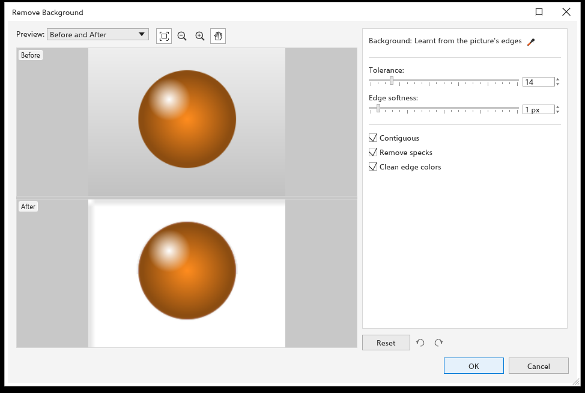

Remover o fundo de um bitmap
Bitmaps > Remover fundo deixa transparente o fundo de uma foto ou digitalização e mantém o assunto. Funciona neste computador e não precisa de serviço de IA. A barra de propriedades de um bitmap selecionado tem o mesmo comando.

Para remover um fundo
- Selecione um ou mais bitmaps.
- Clique em Bitmaps > Remover fundo. A prévia mostra o bitmap antes e depois, com um quadriculado onde ele fica transparente.
- Ajuste as opções abaixo até o assunto se destacar de forma limpa.
- Clique em OK. Todos os bitmaps selecionados mudam em uma única etapa de desfazer.
Opções
- Fundo As cores a remover, uma por linha. No início há uma só linha, Automático: o TraceDraw descobre as cores do fundo nas bordas da imagem (até quatro, então um degradê ou um fundo de dois tons funciona). Cada linha tem:
- a amostra da cor;
- um conta-gotas: clique nele e depois em uma cor numa prévia ou no desenho, e a linha fica com essa cor. Na primeira linha, Automático volta às cores aprendidas;
- a sua própria tolerância, um número inteiro de 0 a 100. Ela mostra a Tolerância de baixo até você mudá-la;
- Remove color (x), que tira a linha da lista. A última linha sempre fica.
Add color (+) acrescenta uma linha: clique nele e depois na cor, na prévia Antes ou no desenho. Um pixel conta como fundo quando está perto o bastante de qualquer cor da lista, cada uma com a sua tolerância.
- Atalhos com o conta-gotas ligado Shift+clique numa prévia acrescenta a cor sob o ponteiro como nova linha e deixa o conta-gotas ligado, para escolher várias cores seguidas. Alt+clique tira a linha cuja cor é a mais próxima da que está sob o ponteiro. A cor escolhida numa prévia vem da imagem antes da mudança, então dá para escolher até uma parte que já sumiu.
- Tolerância Quanto uma cor pode se afastar da cor do fundo e ainda contar como fundo (0 a 100, em números inteiros). É a tolerância de toda linha que não tem uma própria. Aumente quando sobrar fundo; diminua quando partes do assunto sumirem.
- Suavidade da borda Suaviza a borda do assunto, em pixels. 0 mantém a borda nítida.
- Contíguo (ligado no início) Só sai o fundo ligado às bordas da imagem, então uma camisa branca sobre fundo branco mantém o interior. Uma cor escolhida numa prévia também começa a remoção no ponto clicado, então um furo dentro do assunto pode sair com uma só escolha. Desligue para remover todo pixel perto de uma cor da lista, por exemplo todos os furos de uma letra ou de um anel.
- Remover manchas (ligado no início) Pequenos pontos soltos que ficaram no fundo também saem.
- Limpar cores da borda (ligado no início) Tira a cor do fundo antigo dos pixels semitransparentes da borda, para não aparecer halo claro ou escuro quando o assunto vai para outro fundo.
- Redefinir, abaixo das configurações, volta todas as opções ao início, com uma só linha Automático; as duas setas ao lado desfazem e refazem as mudanças feitas na caixa de diálogo.
OK guarda as opções e a lista de cores até você fechar o TraceDraw, e o próximo Remover fundo começa com elas.
Dicas
- Funciona melhor com um fundo diferente do assunto: um fundo de estúdio, um céu, um produto sobre uma mesa lisa. Para cenas carregadas, o comando de IA Remover fundo com IA (veja IA) separa assunto e cena pelo significado.
- O resultado substitui os pixels; os efeitos do bitmap ficam permanentes. Para ajustar depois, use Mascarar cores.